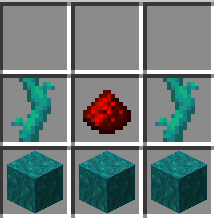

A Minecraft 1.17/1.18 Custom Advancements Minigame
By JashSK and SeanySean
I sense an illegal item
The sculk sensor has been given a custom crafting recipe since it is currently unobtainable in survival. Craft with 3 warped wart blocks, a redstone dust, and 2 twisting vines. While you’re collecting twisting vines you might as well finish advancement number Wild Barber!
